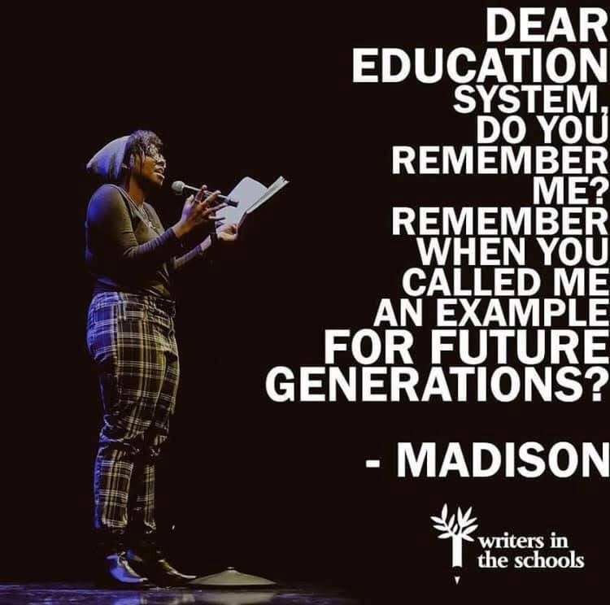
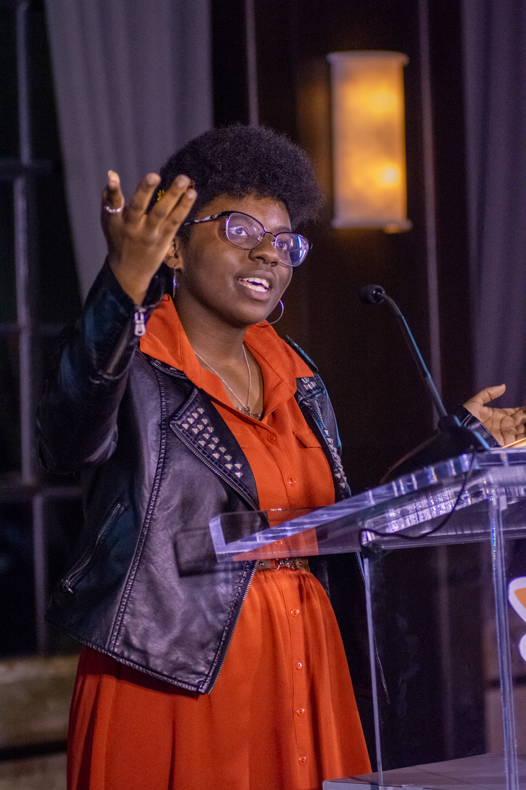

class="journey-image">I’ve always known I wanted to be a poet. My earliest memory of writing poetry was a Mother’s Day assignment in first grade, where I proudly rhymed “mommy” with “bunny” and “sunny.” It wasn’t exactly groundbreaking, but it was a start. By age nine, I was attending annual summer writing workshops, where I discovered the magic of collaborating with others and sharing my words out loud. Yet, as I entered middle school, writing became more than a hobby—it became my escape. Battling social anxiety and depression, poetry became my way of navigating a world that often felt overwhelming. I kept my poems close, sharing them only with teachers who encouraged me to go further, though I was too scared to believe in myself. It wasn’t until my mom began sneaking me into poetry slams as a teenager that I glimpsed the power of spoken word. At 14, I competed in my first slam, making it to the second round. Despite the anxiety and disappointment of not advancing further, I fell in love with the stage—the vulnerability, the connection, and the thrill of being heard. By 16, I earned a spot on the Meta-4-Houston youth poetry team, and a year later, I became Houston’s Youth Poet Laureate and saw my words published in the New York Times. Those milestones didn’t come easy. I wrestled with impostor syndrome, stage fright, and the weight of sharing deeply personal experiences. But I stayed. I grew. And I found my voice.
There’s something electric about performing poetry—it’s addictive. The energy in the room, the connection between poets, and the way these spaces feel like home make it impossible for me to walk away. Poetry gives me a space to express myself in ways I’ve never been able to otherwise. Beyond that, it allows me to connect with others in a way that feels meaningful. When someone tells me they feel seen by my words, I know the risk of vulnerability is worth it. Mental illness and racism are isolating experiences, and if I can make someone feel less alone, that’s everything to me. For me, poetry is more than performance—it’s about creativity, connection, and growth. Writing about being Black in America, mental health struggles, and everything in between is a way of not only processing my world but inviting others to process theirs, too. Poetry isn’t just what I do; it’s who I am.

class="accomplish-image">Placeholder
Placeholder